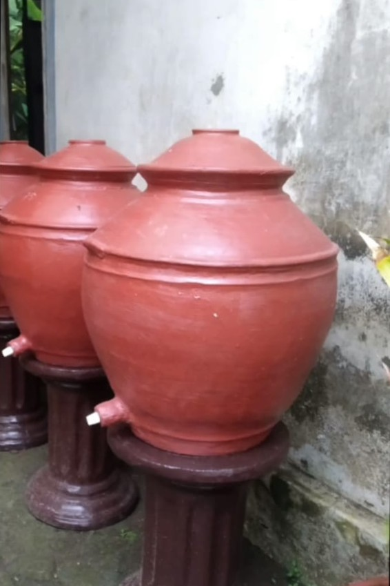
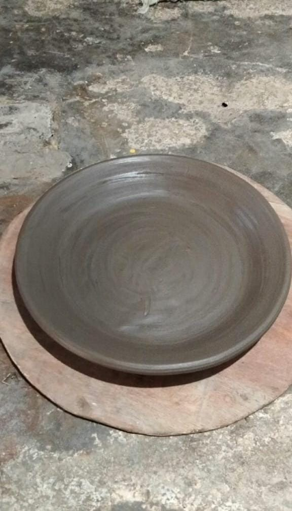

Warisan nenek moyang, tetap hidup dalam gerabah tangan yang terampil.
Selamat Datang di Sulis Gerabah
Gerabah merupakan barang yang sangat menarik untuk menambah keestetikan dan menambah asri di taman halaman anda. Kami menghadirkan keindahan seni tradisional melalui gerabah buatan tangan dari tanah liat pilihan.kerajinan tangan yang terbuat dari tanah liat yang dibentuk dan dibakar untuk menjadi berbagai macam peralatan.
Tentang
Gerabah adalah salah satu bentuk kerajinan tangan tertua di dunia, dibuat dari bahan dasar tanah liat yang dibentuk dan kemudian dibakar. Sederhananya, gerabah itu ya produk dari tanah liat yang dibakar pada suhu yang relatif rendah, biasanya di bawah 1000 derajat Celsius.Gerabah merupakan kerajinan tangan yang bernilai sejarah dalam berbagai budaya di Indonesia. Sulis Gerabah berdiri di Pundong, Bantul. Didirikan oleh nenek moyang, pengrajin yang telah berkarya sejak 1945.
Produk

padasan
Diameter 42 tinggi 42
Rp 50.000
Set Poci
kecil,tanggung,besar
Rp 65.000/Rp 45.000
Pot Bonsai
diameter 50 tinggi 30
Rp 50.000
Pot Bagong
Diameter 30 tinggi 30
Rp 25.000

Layah
Diameter 30 tinggi 5
Rp 10.000
Alamat Kami
Hubungi Kami
Alamat : jalan raya pundong ganjuran gedong rt3 panjangrejo pundong bantul